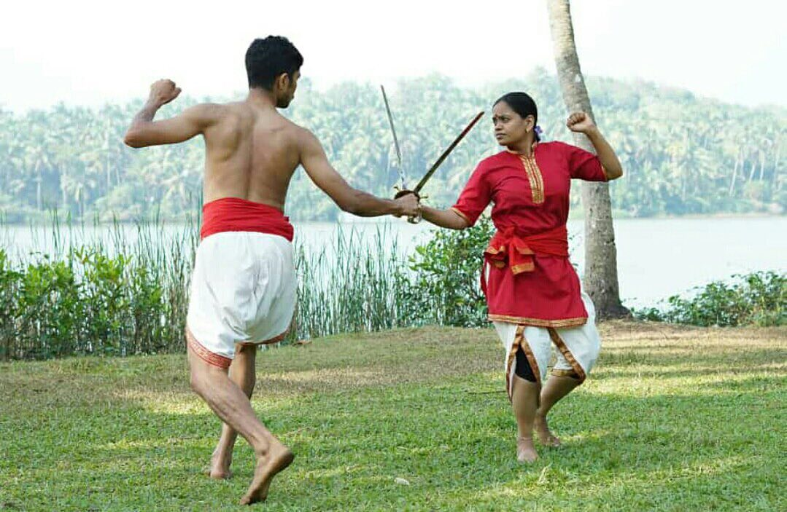
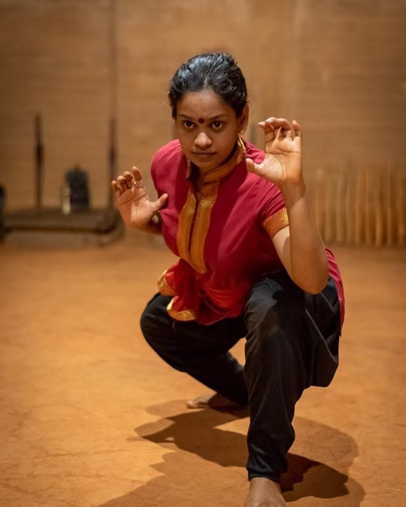
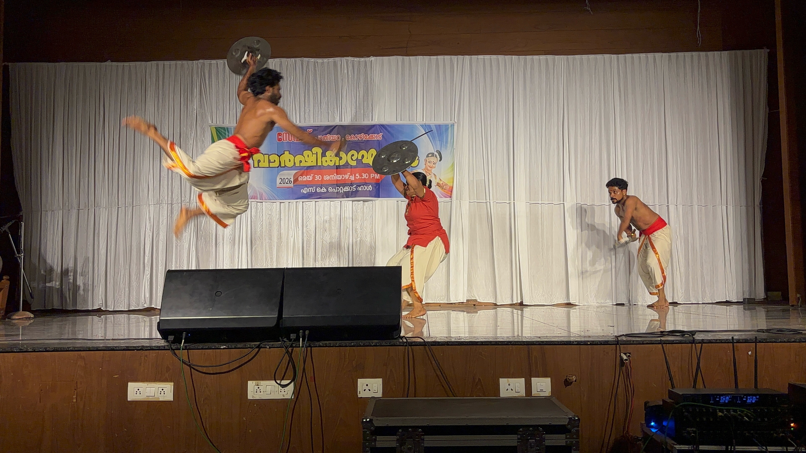
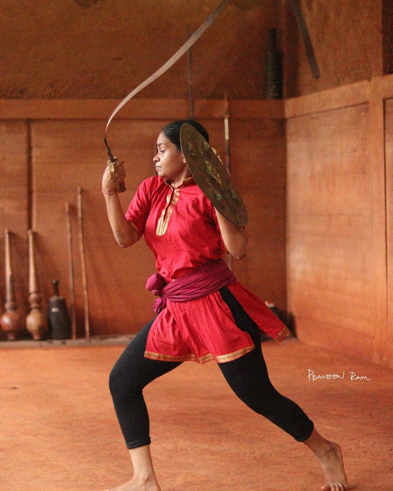
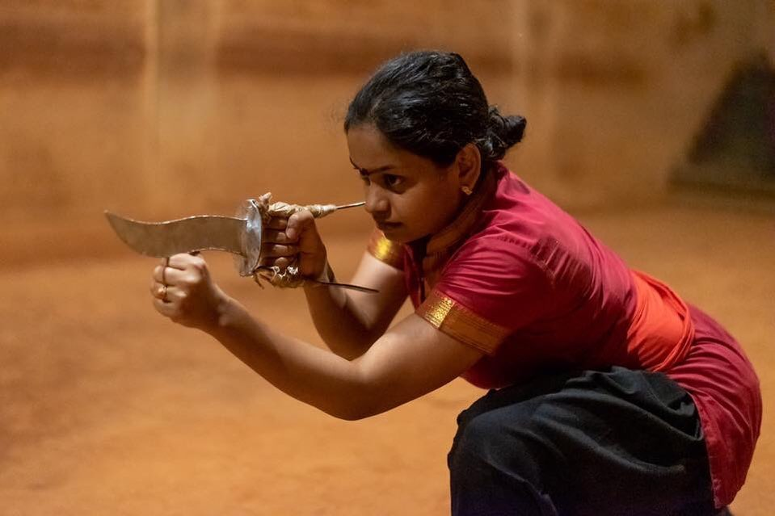
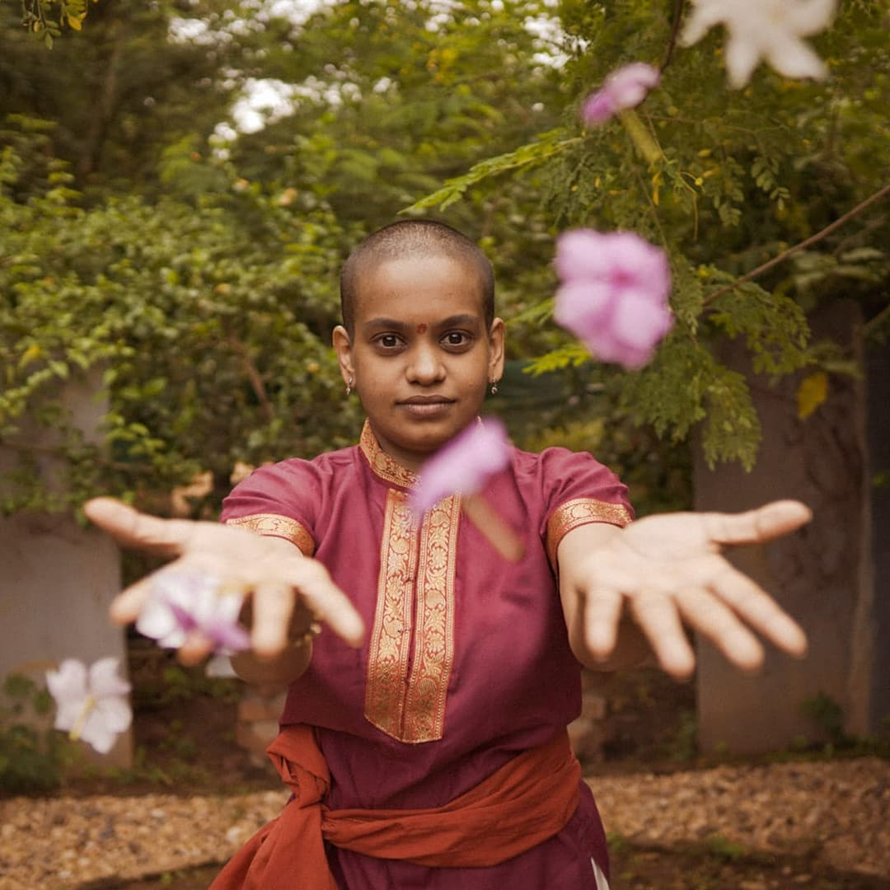
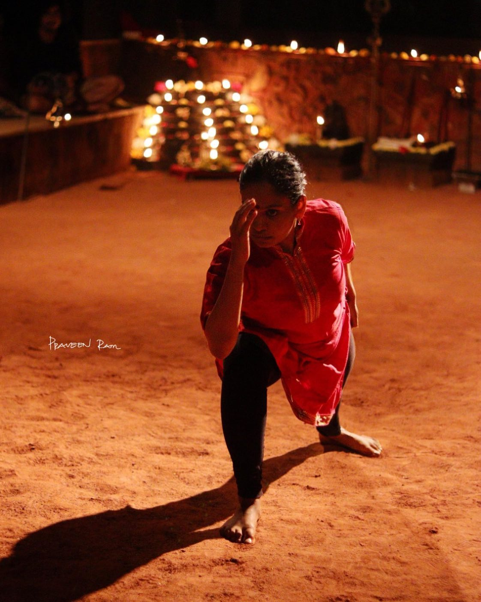
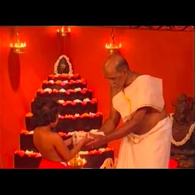

Hindustan Kalari Sangham
Kalariwoman · Kalaripayattu Trainer
The martial art of the Goddesses
Begin your journey
Lineage
Granddaughter of Guru Veerasree Sami Gurukkal, Amrutha carries forward a lineage of Kalaripayattu passed down through generations — the ancient martial art form of Kerala, one of the oldest fighting systems in the world.
She trains at Hindustan Kalari Sangham, where centuries-old technique meets a modern practice: strength, focus, and grace built through disciplined, daily return to the same sacred ground.
“This very floor is where I took my first steps, and over the years, it has become a part of who I am.”
In Practice





Train With Her
Wherever you are in the world, train in fluid animal postures, agility, and deep breathwork — building a flexible body and an unbreakable mind from your own living room.
DM for scheduleStep onto the Kalari floor itself at Hindustan Kalari Sangham and train directly under generations of lineage — the traditional way this art has always been taught.
DM for schedule“Kalari isn’t just about movement; it’s about reclaiming your strength, sharp focus, and absolute grace.”
“To the women looking to break boundaries, connect with an ancient lineage, and build a body that feels unstoppable — this is your sign.”

DM on Instagram for online & offline class details.
DM to Begin Your Journey